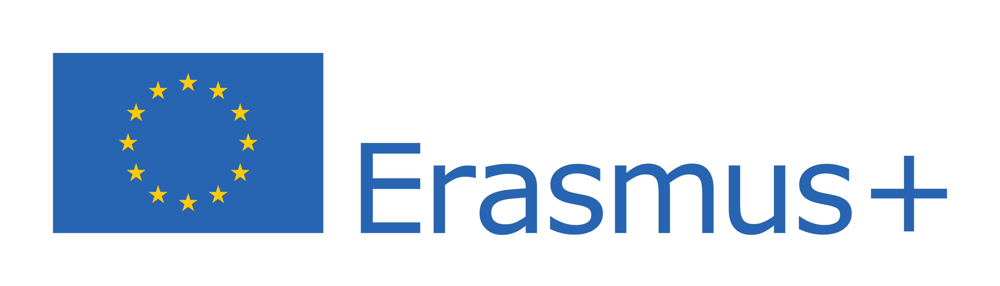

Studiază
oriunde în
Europa.
Alianța Universitară Română centralizează informația despre mobilitățile Erasmus+ pentru toate universitățile din țară — indiferent unde studiezi, ai acces la aceleași oportunități de mobilitate, finanțare și recunoaștere academică.
33Țări participante
4.000+Universități partenere
2–12Luni de mobilitate